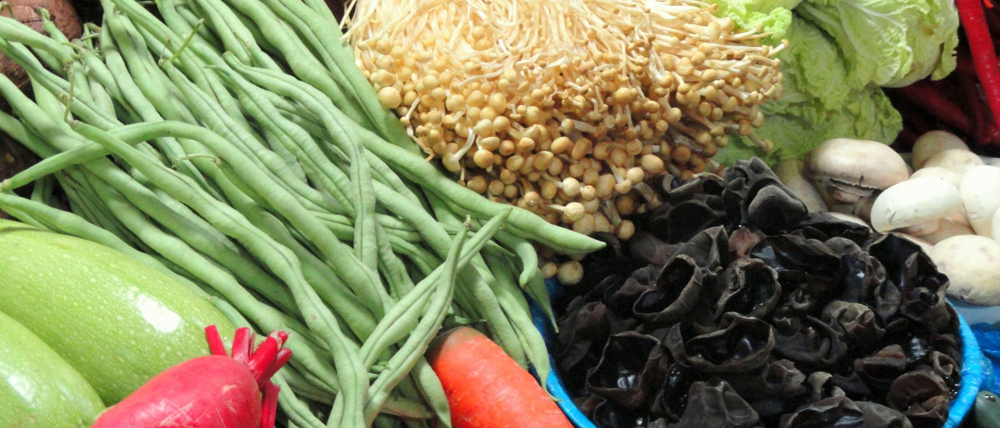

迪庆Deqen · Land of Snow
香格里拉的高原味道：酥油茶暖身，牦牛肉干巴越嚼越香，松茸在雨季上桌。
代表菜
酥油茶配糌粑 · 牦牛肉干巴 · 琵琶肉
早点
酥油茶 · 青稞饼 · 藏式包子
时鲜
吉迪松茸 · 高山牦牛 · 尼西黑陶鸡
一杯
酥油茶 · 青稞酒 · 藏红花茶
街头
糌粑 · 奶渣 · 烤土豆

云南美食 · 16 州味觉版图
从一顿早点开始，到一顿宵夜结束。
十六个州市，各有各的味觉。不标「必吃」，只告诉你——住进一个地方，可以吃到什么。
味觉版图 · 十六州
我们把当地人家常吃的味道记下来——不是菜单，是日子本身。从一顿早点开始、到一顿宵夜结束。
香格里拉的高原味道：酥油茶暖身，牦牛肉干巴越嚼越香，松茸在雨季上桌。
峡谷里的家宴：漆油鸡温热，傈僳手抓饭摆满一桌，日子贴着江声过。
雪山下的古城，腊排骨在火塘边咕嘟，鸡豆凉粉配一碗酥油茶。
洱海边慢下来，乳扇的奶香配三道茶的苦甘，日子跟着苍山的云走。
腾冲的温泉边城：稀豆粉配油条，火瓢牛肉一锅温热，银杏在秋日铺满巷。
瑞丽江畔的傣乡：撒撇开胃，泡鲁达清甜，芒市的烟火从烧烤摊升起。
佤乡与茶山之间：鸡肉烂饭一锅浓稠，舂鸡脚酸辣，冰岛的茶汤回甘。
茶山雾里过日子：哈尼蘸水鸡开胃，墨江紫米香糯，普洱的茶比日子更长。
雨林里的傣味：香茅草烤鱼带着草木香，柠檬撒清酸，夜晚交给烧烤摊。
彝家的火塘与菌子：菌子火锅一锅鲜掉眉毛，坨坨肉在彝家宴上端上桌。
省会不急，一碗米线从早吃到晚，菌子的香气在菜市里飘一整天。
抚仙湖边慢城：鳝鱼米线一碗鲜，铜锅煮鱼守着湖，豆末糖甜得克制。
宣威火腿的名乡：蒸饵丝油润，沾益辣子鸡辣得敞亮，火腿挂在老屋里。
乌蒙山里的暖食：天麻炖鸡温补，昭通酱咸香，小肉串在夜市滋滋冒油。
梯田与古城之间：蒙自过桥米线的汤头，建水烧豆腐的炭火，石屏豆腐一烤就香。
三七之乡的滋补：三七汽锅鸡温润，岜夯鸡酸香，八宝米粒粒饱满。
10 分钟内回复 · 也可以直接拨打王先生 132 0888 8618